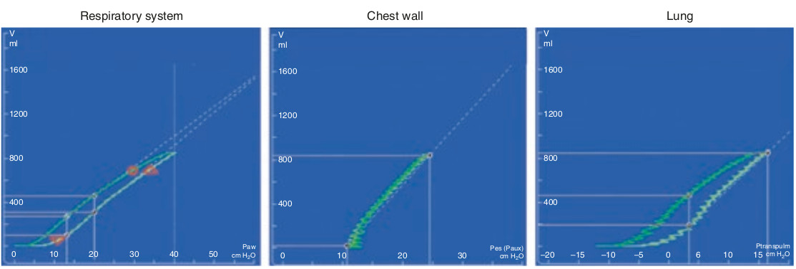

هیستره زیس موجود در لوپ فشار-حجم تنفسی اساسا بخاطر بازگشائی هنگام هواگیری و بازبسته شدن هنگام تخلیه می باشد. نتیجه مهم اینکه لوپ فشار-حجم جدار سینه فاقد هیستره زیس می باشد. بنابراین تمام هیستره زیس موجود در لوپ فشار-حجم ترانس پولموناری همانند لوپ فشار-حجم تنفسی می باشد.

در مورد هیستره زیس کدام مورد زیر غلط است؟
۱ - هیستره زیس در لوپ فشار-حجم تنفسی دیده میشود
۲ - هیستره زیس بکمک مکانیک جدار سینه توجیه میشود
۳ - هیستره زیس اساسا بخاطر بازگشائی و بازبسته شدن ریه می باشد
۴ - هیستره زیس در لوپ فشار-حجم ترانس پولموناری دیده میشود
۵ - در بیماران دارای استعداد برای بازگشائی ریه، هیستره زیس زیاد است